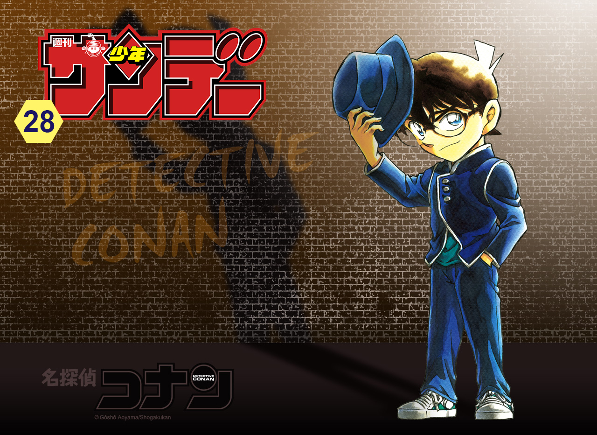
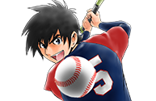

This week's Weekly Shonen Sunday posting order & comments from the author.

Question of the week
"It's the rainy season! What song do you like listening to on Rainy days?"
Detective Conan
Stuff like "Fate" (Lol)...? (TN- I assume he means the Detective Conan ending song of the same title?)
Hoankan Evans no Uso ~Dead or Love~

Yuuko Andou's song "Words of a loner" has a rainy day motif.

Kimi wa 008

Durning rainy days I enjoy listening the sounds of the room itself.
Maoujo de Oyasumi
Kirinji's "Don't despise the rain" ...though well, I guess it is a song associated with rain anyway...
Fire Rabbit!!

Rainy days are for western songs~
SWITCH

BEGIN.
Tonikaku Cawaii

Nothing in particular.
Amano Megumi wa suki darake!

Rip Slyme's "Blue Be-Bop". Other than that, stuff like Gonchichi's music and such.
Souboutei Kowasubeshi

The Musical "Singin' in the rain." The theme especially. It makes me feel better, especially the movie.
Sokyuu no Ariadne

Bohemian Rhapsody. I've been listening to it a lot more lately, actually...
Yuko sae tatakaeba

Sakanaction's "Ame(b)"!
Major 2nd

Chisato Moritaka's "Rain".
Daiku no Hato

I can heaar (Can heaar) the Frog's sooong (The Frog's sooong.)
Ponkotsu-chan Kenshochuu

Motohiro Hata's song "Rain".
Be Blues!
Seiko Matsuda's "Rain Resort".
Maiko-san chi no Makanai-san

Yuko Hara's "Hydrangea Song."
Gofun go no Sekai

Nature's natural tune called raindrops. (Lol).
Anonatsu 1959

Lone Wolf and cub.
Chrono Magia: Infinity Gear
Hideaki Kikunaga's "Rainy Blue" is the only correct answer!
Tantei Xeno to Nanatsu no Satsujin Misshitsu

I love Remioromen's "Umbrella Jellyfish".
Undine ha Kyou mo Koi wo suru ka?
I like to listen to songs that fit the seasons. Right now, "Alala's Spell" is in.
Zettai Karen Children

I can't really say too much due to copyright issues, but it's a feeling of "being soaked for your sake, dummy". (TN- I thiiiink he's talking about the song by Iori that was used in the Detective Conan anime "As long as you're here".)
Aozakura Bouei daigakkou Monogatari

Mr. Children and Mr. Big.
Youkai Giga

That tune by Aki Yashiro.
Tokaichi Hitoribocchi

Tokaichi doesn't have a rainy season, teehee~
MAO
Rumiko Takahashi
Asami Kobayashi's "The Sound of the Rain is the Sound of Chopin"